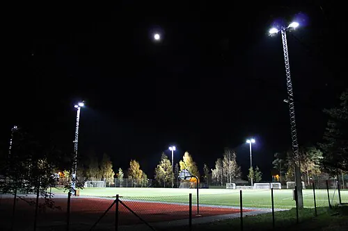
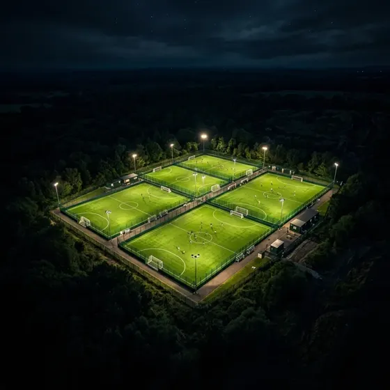

Notas para dueños de complejos.
Cómo ordenar turnos, cobros y caja de un complejo de fútbol.

Guía · 2026Los mejores sistemas de gestión para canchas de fútbol en Argentina
Análisis actualizado de las aplicaciones y sistemas para administrar reservas de complejos de fútbol 5, 7 y 11.

ComparativaTurnoGol frente a otras opciones para tu complejo
Qué mirar antes de elegir: comisión, permanencia, caja y quién se queda con tus datos.